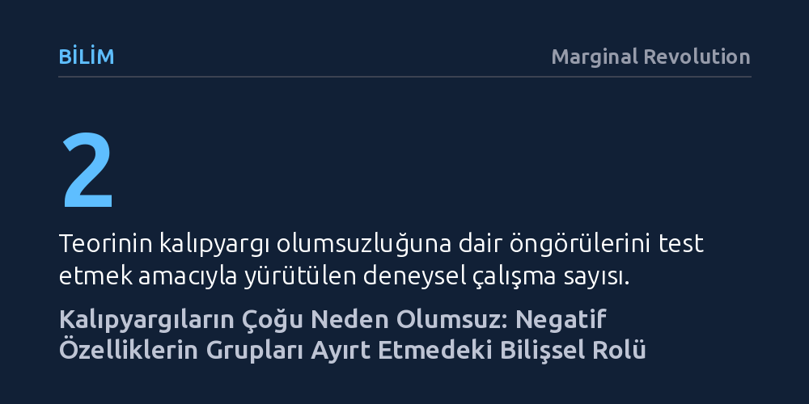

BILIM · Marginal Revolution · 2026-10-08
Kalıpyargıların çoğunlukla olumsuz olmasının nedeni grup düşmanlığı değil, olumlu davranışların yaygın, olumsuzların ise daha çeşitli ve nadir olmasıdır. İnsanlar grupları ayırt edici özelliklerle tanımladığından, nadir bulunan olumsuz nitelikler grupları ayrıştırmada bilişsel olarak daha belirleyici hale gelir.
Kalıpyargıların ardında mutlaka nefret ya da grup düşmanlığı aramak yerine, olumsuz etiketlerin insan zihninin grupları birbirinden ayrıştırma mekanizmasının doğal bir sonucu olabileceğini gösterir.

Sosyal psikolojide kalıpyargılar, belirli bir sosyal grubun karakteristik ve ayırt edici niteliklerine dair inançlar olarak tanımlanır. Günlük yaşamda ve kültürler arası gözlemlerde karşılaşılan kalıpyargıların ezici çoğunluğu olumsuzdur; farklı gruplar sıklıkla tembellik, güvenilmezlik veya kabalık gibi negatif etiketlerle nitelendirilir. Oysa bu olgu temel bir çelişki barındırır: Sosyal çevremizde ve gündelik etkileşimlerimizde insanların çok büyük bir kısmı olumlu ve uyumlu davranışlar sergiler.
İnsan ilişkilerinde olumlu davranış ve bilgilerin istatistiksel olarak baskın olduğu gerçeği uzun zamandır bilinmektedir. Buna rağmen insan zihninin diğer grupları tanımlarken neden ısrarla negatif özelliklere tutunduğu sorusu psikoloji biliminde önemli bir muamma olagelmiştir. Klasik yaklaşımlar bu durumu genellikle dış gruplara yönelik motivasyonel düşmanlık, bilinçli önyargı veya genel bir karamsarlık eğilimiyle açıklamaya çalışmıştır. Ancak son bulgular, meselenin grup nefretinden ziyade bilginin doğası ve insan zihninin ayrıştırma mantığıyla ilgili olduğunu göstermektedir.
Christian Unkelbach, Anne Irena Weitzel ve Hans Alves tarafından ortaya konan bilişsel-ekolojik teori, kalıpyargı olumsuzluğunu matematiksel ve algısal bir temele oturtur. Teori iki ana kurala dayanır: Bilişsel açıdan zihnimiz grupları tanımlarken onları diğer gruplardan ayıran özelliklere odaklanır. Ekolojik açıdan ise sosyal dünyamızda olumlu bilgiler son derece yaygınken, olumsuz bilgiler hem daha nadirdir hem de çok daha geniş bir çeşitlilik sergiler.
Olumlu davranışlar kural gereği belirli standartlara uymayı gerektirir; dürüst, nazik veya çalışkan olmanın yolları birbirine benzer ve bu yüzden pozitif davranışlar tekdüzedir. Buna karşılık kuralları çiğnemenin ve olumsuz davranış sergilemenin sayısız farklı biçimi vardır. Eğer olumsuz nitelikler olumlulara kıyasla daha seyrek ve daha çeşitliyse, bir grubu diğerinden ayırt etme olasılıkları istatistiksel olarak çok daha yüksektir. Dolayısıyla insan zihni bir grubu diğerlerinden ayrıştırmak için karakteristik bir fark aradığında, elindeki en elverişli ve belirleyici malzeme kaçınılmaz olarak olumsuz nitelikler olmaktadır.
Araştırmacılar geliştirdikleri teoriyi iki deneysel çalışma, iki mevcut veri seti ve bilgisayar simülasyonlarıyla test etmiştir. Elde edilen en çarpıcı sonuç, bir özelliğin bir grubu diğerlerinden ayırmada taşıdığı tanısal güç ile o grubun üyelerini gerçekte ne kadar temsil ettiği arasındaki büyük farktır. Simülasyonlar, bir grubun yalnızca çok küçük bir azınlığında görülen nadir bir olumsuz özelliğin bile, grubu diğerlerinden ayrıştırmada son derece güçlü bir tanısal ipucu işlevi görebildiğini ortaya koymaktadır.
Bu mekanizma önemli bir algı paradoksu yaratır: Kalıpyargılar bir grubu diğerlerinden ayırma bağlamında karşılaştırmalı olarak tanısal bir doğruluğa sahip olabilir, ancak grubun genelini tarif etme noktasında tamamen yanıltıcıdır. Örneğin bir grubun sadece yüzde beşinde görülen olumsuz bir alışkanlık diğer gruplarda hiç yoksa, zihin o grubu bu özellikle etiketler. Bu etiket grubu ayrıştırmak için işlevsel görünse de grubun yüzde doksan beşini oluşturan bireyleri haksız yere damgalamış olur. Bu tablonun oluşması için gruplar arası düşmanlık ya da özcü önyargılar gerekmemektedir; bilgi ekolojisinin dağılımı bu sonucu kendiliğinden doğurmaktadır.
Bu bulgular, kalıpyargıların doğasına ve ayrımcılıkla mücadele yöntemlerine bakışımızı kökten değiştirecek niteliktedir. Yıllardır kalıpyargıların temelinde salt ahlaki kusur, kötü niyet ya da dış grupları aşağılama arzusu arayan yaklaşımlar, meselenin bilişsel zeminini eksik değerlendirmiştir. Yeni model, insanların diğer gruplara karşı özel bir nefret beslemesine gerek kalmaksızın, salt bilginin dağılım biçimi ve zihnin sınıflandırma mekanizması nedeniyle olumsuz kalıpyargıların nasıl kaçınılmaz hale geldiğini açıklar.
Model ayrıca olumlu kalıpyargıların hangi koşullarda ortaya çıkabileceğine de açıklık getirmektedir; pozitif bir nitelik ancak nadir ve ayırt edici olduğu istisnai durumlarda bir grubun kalıpyargısı haline gelebilmektedir. Ayrımcılığı ve kalıpyargı olumsuzluğunu azaltmayı hedefleyen müdahaleler açısından çıkarılan temel ders açıktır: İnsanları yalnızca önyargılı olmakla suçlamak yerine, sosyal bilgi ekolojisindeki veri akışını, olumsuz davranışların medyada ve söylemde nasıl sunulduğunu ve zihnin ayrıştırma eğilimlerini hesaba katan yeni stratejiler geliştirilmelidir.